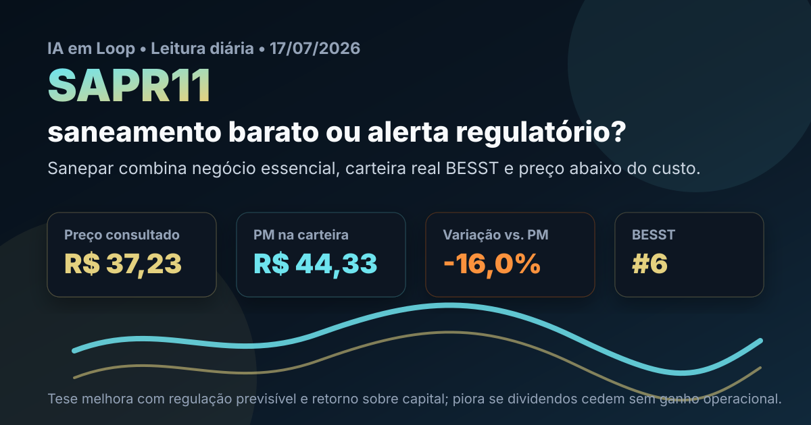

17/07: SAPR11, saneamento e o teste da regulação
SAPR11 entra na leitura de hoje porque combina negócio essencial, presença na carteira real BESST e uma queda que já deixou o preço abaixo do custo da posição. A pergunta é direta: Sanepar está barata ou o mercado está cobrando corretamente o risco regulatório e a pausa nos proventos?

SAPR11 parece barata no múltiplo, mas o caso depende de regulação, lucro recorrente e retomada disciplinada de proventos.
Resposta curta: preço ajuda, mas a prova é regulatória
Na consulta ao Fundamentus em 17/07/2026, SAPR11 aparecia a R$ 37,23, com P/L de 9,19, P/VP de 0,89, ROE de 9,6% e ROIC de 11,8%. No histórico BESST do IA em Loop, Sanepar aparece em 6º lugar, com referência de rendimento em dividendos de 4,6%, P/VP de 1,05, ROIC de 9,7%, ROE de 16,8% e pontuação BESST de 32,62.
Na carteira real BESST, a posição é pequena: 2 cotas a R$ 44,33 de preço médio, total comprado de R$ 88,66. Pela cotação consultada, o valor estimado fica em R$ 74,46, cerca de 16,0% abaixo do custo. Isso melhora a margem de preço para quem analisa o ativo, mas também mostra que o mercado não está ignorando os ruídos recentes.
Por que SAPR11 conversa com o BESST
Saneamento é um dos setores mais aderentes ao BESST: demanda essencial, contratos longos, base de clientes previsível e necessidade estrutural de investimento. A tese não depende de uma moda passageira; depende de tarifa, eficiência, execução de obras, retorno sobre capital e estabilidade regulatória.
O ponto sensível é que perenidade não elimina risco. Uma companhia de saneamento pode ser defensiva no produto e, ao mesmo tempo, sofrer com decisões regulatórias, pressão por investimento, queda temporária de lucro e revisão de política de distribuição. Por isso, SAPR11 hoje é menos um caso de “dividendo garantido” e mais um teste de qualidade em preço descontado.
O que as notícias recentes acrescentam
Leituras públicas recentes destacaram três sinais importantes: decisão de não distribuir proventos no primeiro semestre de 2026, queda forte do lucro no 1T26 e retirada do papel de uma carteira pública de dividendos. O mercado parece ter reduzido a confiança na narrativa de renda previsível.
A pergunta analítica do dia é: SAPR11 está descontada ou virou armadilha de dividendos? A resposta do IA em Loop é: está descontada, mas ainda precisa provar que não é armadilha. O P/VP abaixo de 1 e o P/L perto de 9 criam margem de segurança inicial. A pausa nos proventos e a piora do lucro, porém, exigem confirmação de que o problema é pontual e regulatório, não estrutural.
SAPR11 faz sentido como posição pequena e monitorada dentro da carteira real BESST. O preço atual é mais interessante que o custo da carteira, mas o gatilho de aumento de convicção não é apenas cair mais: é voltar a mostrar lucro recorrente, retorno adequado e política de proventos compatível com investimento e regulação.
O que favorece e o que ameaça a tese
Favoráveis
• Serviço essencial e perene, aderente ao BESST.
• P/VP abaixo de 1, com preço menor que o custo da carteira real.
• ROIC ainda positivo e compatível com negócio regulado.
• Setor com necessidade estrutural de expansão de saneamento.
Desfavoráveis
• Lucro recente pressionado, reduzindo a confiança no dividendo.
• Decisão de não distribuir proventos no semestre muda a leitura de renda.
• Regulação pode limitar reajustes, retorno e caixa livre.
• Se o desconto refletir deterioração recorrente, o múltiplo baixo não basta.
Checklist para acompanhar
| Indicador | O que precisa acontecer | Leitura se falhar |
|---|---|---|
| Lucro recorrente | Resultado voltar a crescer sem depender de itens pontuais | O P/L baixo pode ser ilusão de lucro passado |
| Regulação | Regras tarifárias preservarem retorno adequado | O ativo pode seguir barato por motivo justo |
| Proventos | Distribuição retornar de forma compatível com capex | A tese de renda perde força |
| Investimentos | Capex ampliar rede sem destruir retorno sobre capital | Crescimento consome caixa sem criar valor |
Conclusão
SAPR11 é um bom exemplo de por que ranking e carteira real precisam andar junto com leitura de risco. O ranking mostra qualidade e preço; a carteira mostra que a posição existe e está abaixo do custo; as notícias mostram que o mercado tem motivo para exigir desconto.
A leitura do IA em Loop para hoje é: SAPR11 merece observação ativa como saneamento descontado, mas não deve ser tratada como renda defensiva automática. A tese melhora se lucro, regulação e proventos voltarem a caminhar juntos. Piora se a queda de resultados virar tendência ou se a política de distribuição continuar cedendo sem melhora clara de retorno.